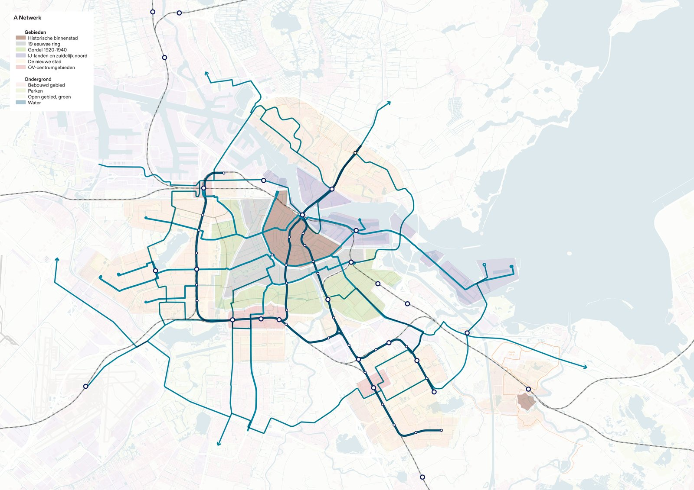
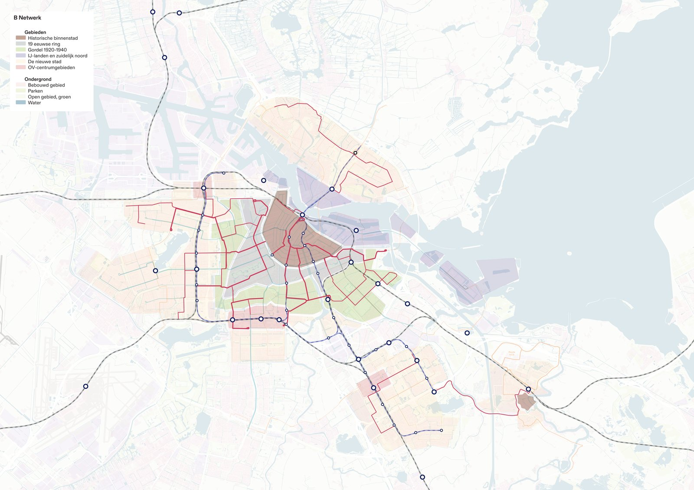
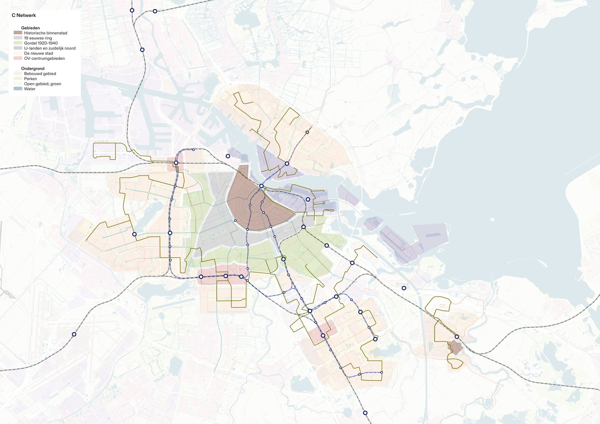
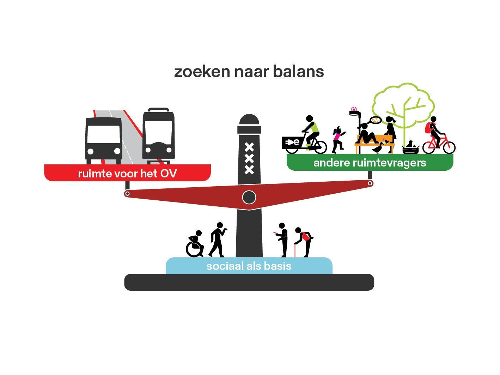
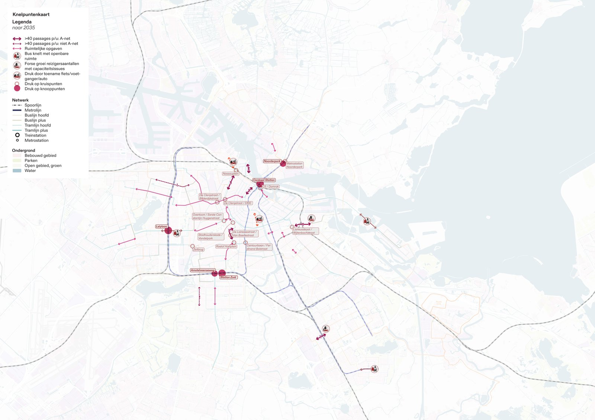
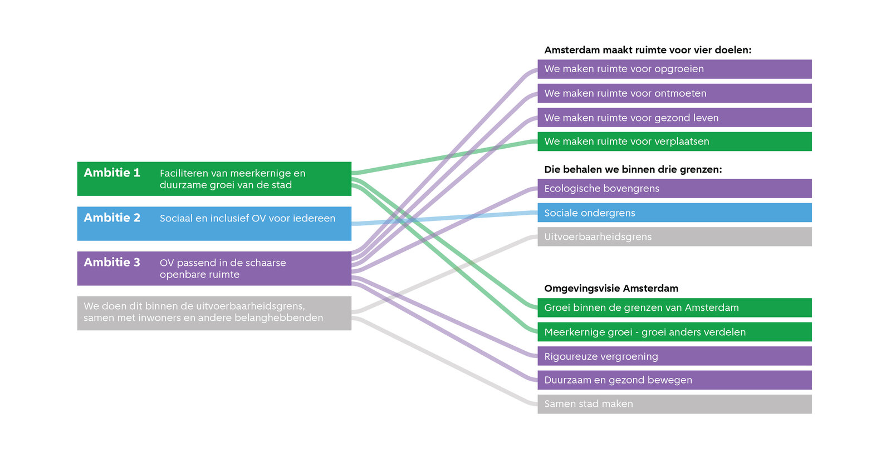

Overview
Amsterdam keeps growing, and its streets are filling up: cycling, walking, greenery and public transport all compete for the same scarce space. With the municipality, Vervoerregio Amsterdam and GVB, we built a tactical perspective for the public transport network towards 2035.
At its core sits a new way of prioritising. The A-net absorbs the largest growth and gets priority in the street, the B-net balances transit against other claims on space, and the C-net stays fine-grained and asks little extra room. Six principles put the social function of public transport first and steer travel towards Nieuw-West, Noord and Zuidoost. The perspective feeds Amsterdam’s Beleidskader Verkeersnetten and the development agenda with VRA and GVB.
My role
I was the right hand of the project leader and ran parts of the project under my own lead. My main piece: translating the research into the map series that shows Amsterdam’s mobility structure and the A-, B- and C-net, the images the whole perspective now hangs on.
The project in images






